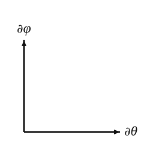

Verification: ∂θ⋅∂φ=(−0.286)(−0.286)+(0.0900)(−0.910)+(−0.957)(0)=0.0817−0.0819+0≈0 to rounding error. Orthogonality confirmed.
The tangent-plane diagram, drawn locally at p:

The horizontal axis represents ∂θ direction (unit length); the vertical axis ∂φ direction (length sinθ0≈0.981). At the sample point’s latitude they happen to be nearly the same length; near the poles the discrepancy is much larger.
In coordinate basis
A general tangent vector at p is
v=vθ∂θ+vφ∂φ,
with components (vθ,vφ)∈R2. The components depend on the chart; the vector itself does not.
The chart-coordinate functions on S2 are the smooth real-valued functions θ(p)=arctan(X2+Y2/Z) and φ(p)=arctan(Y/X), both defined where the chart is. Their differentials dθ,dφ are the dual basis:
dθ(∂θ)=1,dθ(∂φ)=0,dφ(∂θ)=0,dφ(∂φ)=1.
A general covector is ω=ωθdθ+ωφdφ and the pairing with v is ω(v)=ωθvθ+ωφvφ — just multiply matched components and sum.
Why this chart is the “easy” one
In the standard chart, almost everything has a diagonal form:
The metric (next section) has the diagonal matrix g=diag(1,sin2θ).
The basis is orthogonal, so raising and lowering indices is the same as multiplying components by gμμ or 1/gμμ.
The Christoffel symbols (section 5) have only three non-zero entries.
The next page introduces the skew chart, which has none of these properties. The math is identical; the components are not.